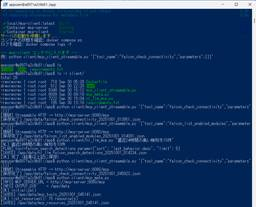
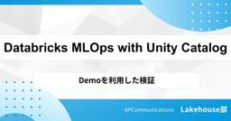

APC 技術ブログ
https://techblog.ap-com.co.jp/
株式会社エーピーコミュニケーションズの技術ブログです。
フィード

【CrowdStrike】API徹底解説 その３
APC 技術ブログ
「CrowdStrike Falcon」の強力な機能の一つであるFalconの「API」をPythonで利用する方法とAIエージェントとCrowdStrike Falconプラットフォームを接続するFalcon MCPについてご紹介いたします。
3日前
GitHub Advanced Security AlertをBackstage Notificationsで通知しよう
APC 技術ブログ
はじめに 皆様いかがお過ごしでしょうか。ACS事業部亀崎です。 （例年の10月と考えたらまだ少し暑いかもしれませんが）10月に入ってやっと過ごしやすい気候になってきたかと思います。 過ごしやすくなってきたところで、新しい取り組みをご紹介したいと思います。 今回取り組むのは「GitHub Advanced SecurityのAlertをBackstage Notificationsに通知しよう」というものです。 BackstageとBackstage Notifications この記事をご覧の方々ならば、もう Backstageとはなにかということはご存知かとは思いますがあらためて。 Back…
4日前

『Platform Engineering (O’Reilly)』輪読会レポート第二弾 ～ 第8章から第14章で語られるプラットフォームチーム設計と、組織に受け入れられるプラットフォームとは
APC 技術ブログ
オライリーの本「Platform Engineering」の8章～14章について輪読会を行った際の内容についてまとめたブログです。
4日前

Dependabot で実現する組織的な脆弱性対応
APC 技術ブログ
はじめに 依存関係の脆弱性 余談 脆弱性発生時の対応 Dependabot による脆弱性の検知 定期的にバージョンアップをする文化づくり Dependabot を活用した組織的な脆弱性対応 ACS 事業部のご紹介 はじめに こんにちは、ACS事業部の田中です。 今回は依存関係（ライブラリ、パッケージなど）の脆弱性と、Dependabot を用いた組織的な脆弱性対応について整理したいと思います。 依存関係の脆弱性 近年で有名な依存関係の脆弱性の事例といえば、Log4Shell（CVE-2021-44228）でしょうか。 2021年11月、ログ出力ライブラリ「Apache Log4j 2」に脆弱性…
6日前

DatabricksのUnity Catalogを活用したMLOps（2編、検証）
APC 技術ブログ
はじめに エーピーコミュニケーションズGDAI事業部Lakehouse部の鄭(ジョン)です。 この記事では、DatabricksのUnity Catalogを活用したMLOpsの実践方法をご紹介します。 シリーズ第2回となる今回は、Databricks の Unity Catalog（UC）を活用してシンプルな ALS （Alternating Least Squares）推薦モデルを構築し、そのプロセスを MLOps によって自動化したデモを紹介します。さらに、実際に MLOps ワークフローを設計・実行する手順を、コードとあわせて解説します。 シリーズ第1回 : DatabricksのUn…
6日前

Terraform MCP Server が HCP Terraform と連携できるようになりました
APC 技術ブログ
はじめに Terraform MCP Server で HCP Terraform の認証 どんなことができるようになったか？ MCP を使ってみる HCP Terraform のワークスペースの一覧の取得 HCP Terraform のモジュールの一覧の取得・コード生成 HCP Terraform のワークスペースで Plan / Apply を実行 まとめ ACS 事業部のご紹介 はじめに ACS 事業部の安藤です。 Hashicorp 公式のイベント Hashiconf 2025 が昨日未明頃からサンフランシスコで開催されていますが、 既にサービスの新機能やインテグレーションがいくつか発…
8日前
【OCI】OCIのデータベースサービスの概要を調べてAWSと比較してみる
APC 技術ブログ
はじめに こんにちは。クラウド事業部の有野です。 先日OCIの資格を取得してきましたが、思えばデータベースサービスに関する問題が1問もなかったことに気が付きました。 せっかくなのでOCIにおけるデータベースサービスの形態についても大枠を理解しておきたく、 「どんな種類が用意されているのか？」を簡単に調べてみました。 また、私はこれまでAWS以外のクラウドを触ったことがないので、 理解を促すために「AWSのサービスに当てはめるとどうなのか？」も併せて記載してみました。 Oracle Databaseのサービス形態が3系統 OCIはOracleのクラウドサービスなので、やはりOracleエンジンの…
9日前
【OCI IAM】ポリシー構文を理解して試験にも役立てよう！例題付き解説（5問）
APC 技術ブログ
目次 目次 はじめに どんなひとに読んで欲しい 1. OCIポリシー構文の基本 主な要素 2. よくある間違い 3. 練習問題（5問） Q1. 無効なポリシーはどれ？ Q2. NetworkAdmin グループに、テナンシ全体で VCN を管理させたい。正しいポリシーはどれ？ Q3. 任意のユーザーに Object Storage の一覧確認のみを許可したい。正しいポリシーはどれ？ Q4. 条件付きポリシーに関する説明として正しいものはどれ？ Q5. Dynamic Group の指定で正しい subject はどれ？ 4. まとめ お知らせ はじめに こんにちは、クラウド事業部の清水(雄)で…
9日前
Datadog Live Osaka 2025 に参加してきました！
APC 技術ブログ
こんにちは。クラウド事業部の河村です。 Datadog Live Osaka 2025 に参加してきました。 発表の中から印象に残ったポイントをご紹介します。 イベント概要 印象に残ったポイント AIOps戦略の紹介 エンドユーザー企業による事例講演 最後に ご案内 イベント概要 名称：Datadog Live Osaka 2025 主催：Datadog Japan合同会社 日程：2025年9月4日(木) 会場：AP イノゲート大阪 プログラム：AIOps戦略の紹介、エンドユーザー企業による事例講演、レセプションなど 印象に残ったポイント AIOps戦略の紹介 はじめにDatadogのAIOp…
9日前
Databricks Asset Bundlesを活用して、CI/CDをやってみよう：変数設定を活用したカタログ間の移動
APC 技術ブログ
はじめに こんにちは、Global Data + AI事業部Lakehouse部の陳（チェン）です。 「Databricks Asset Bundlesを活用して、CI/CDをやってみよう」シリーズの第二弾です。第一編にて話をした「カタログ間のアーティファクトの移動」の実演に「変数参照」を交えながら、Databricks Asset Bundlesの活用方法を紹介いたします。 シリーズになっているため、アーティファクトの準備やDatabricks Asset Bundlesの準備について、第一編を参照してください。 まえおき Databricks上で、CI/CDプロセスを円滑に行うためのDat…
9日前
Databricks × Terraform × Docker Image: 実践的な構築と CI/CD パイプライン
APC 技術ブログ
目次 目次 はじめに 背景と課題感 全体アーキテクチャ 前提条件 手順 1. Docker イメージの作成 2. Terraform でクラスタを定義 3. 検証の進め方 CI/CD への統合 まとめ おわりに はじめに GLB事業部Lakehouse部のティダです。 前回の記事では、Terraform を使用した Databricks リソースのデプロイの自動化について紹介しました。 前編の記事はこちらです。 https://techblog.ap-com.co.jp/draft/entry/PIuJdBvdBPoiP8oI7p6Ql5FXjxg 今回はその第2弾として、Terraform …
10日前
【Zscaler】Zscaler社の研修を活用してサーバエンジニアがゼロトラスト未経験から3冠！ZTA・ZCSE・ZCSP合格体験記
APC 技術ブログ
はじめに こんにちは！株式会社エーピーコミュニケーションズ iTOC事業部 CWE部 FLeSOLの稲葉です。 今回は、今話題のゼロトラストセキュリティを実現する「Zscaler」の認定資格であるZTA (Zscaler Digital Transformation Administrator)、ZCSE (Zscaler Certified Sales Engineer)、そしてZCSP (Zscaler Certified Sales Professional)の3つに合格しましたので、その合格体験記を皆さんに共有したいと思います。 この記事が、これからZscalerの資格取得を目指す方々…
10日前
【OCI】OKEのリソースを6分で作ってみる
APC 技術ブログ
目次 目次 はじめに どんなひとに読んで欲しい 関連記事 OKE作成 まとめ お知らせ はじめに こんにちは、クラウド事業部の松尾です。 OCIのマネージドKubernetesサービスであるOralce Container Engine for Kubernetes（OKE）を簡単に構築してみます。 コントロールプレーンやワーカーノードの構成をコンソールで確認してみたいと思います。 どんなひとに読んで欲しい OKEチュートリアルをやってみた結果を知りたい人 OKEのコンソール表示を知りたい人 関連記事 参考にしたチュートリアルはこちら。 oracle-japan.github.io 拡張クラス…
13日前
Platform Engineering Kaigi (PEK) 2025 で 感じたBackstageの認知拡大
APC 技術ブログ
Platform Engineering Kaigi 2025 みなさまこんにちは。ACS事業部 亀崎です。 9月18日に中野セントラルパークカンファレンスで行われました、Platform Engineering Kaigi 2025 に 出展者として参加させていただきました。 www.cnia.io ご来場の皆様、オンラインで参加の皆様、そして運営の皆様、お疲れ様でした。 弊社ブースにご来訪いただいた皆様とのディスカッションがとても参考になりました。ありがとうございました。 弊社ブースでは 開発者ポータル Backstage をManaged Serviceと提供させていただいている「Pla…
14日前
Databricksで自分の無料RAGチャットボットを作ってみましょう-!
APC 技術ブログ
はじめに エーピーコミュニケーションズGDAI事業部Lakehouse部の鄭(ジョン)です。 この記事では、DatabricksのFree Editionを利用してRAGチャットボットを作成する方法をご紹介します。 今回のチャットボットは、Unity Catalogに保存されているテーブルを利用してRAGを構築し、Databricks Apps上でデプロイしました。 Free Editionでは、Databricksに内蔵されているモデルを利用して、無料でチャットボットを作成することができます。 ただし、機密性の高いデータを扱う場合には注意が必要であり、バックアップをあらかじめ取っておくことを…
15日前
Backstage Scaffolderを活用してセルフサービスを実現
APC 技術ブログ
はじめに こんにちは、ACS事業部亀崎です。先日「開発生産性の壁」とその解決方法についてご紹介させていただきました。 techblog.ap-com.co.jp 今回は、Backstageをどのように活用すればよいか、その例を１つ挙げてご説明したいと思います。 Platform Engineering Platform Engineeringの出発点 まずはじめにPlatform Engineeringという基本的なところからおさらいしたいと思います。 Platform Engineeringの一番重要なキーワードは、「セルフサービス」によるPlatformの提供です。 従来型の開発チームとイ…
19日前
DatabricksのUnity Catalogを活用したMLOps（1編、概念・事例紹介）
APC 技術ブログ
はじめに エーピーコミュニケーションズGDAI事業部Lakehouse部の鄭(ジョン)です。 この記事では、DatabricksのUnity Catalogを活用したMLOpsについてご紹介いたします。 シリーズ投稿の第1回として、基本的な概念と実際の運用事例を取り上げます。 本記事は「MLOpsとは何か」といった入門的な解説ではなく、すでにMLOpsの概念を理解しており、実際にどのように導入すべきかを検討している方を対象としています。 そのため、詳細な理論説明は省略し、一般的なMLOpsとDatabricksにおけるMLOpsの違いを比較し、さらに実際のDatabricks MLOps構築事…
19日前
Databricks AppsとLakebaseを連携し、アプリケーションのトランザクションデータを管理する
APC 技術ブログ
はじめに GDAI事業部 Lakehouse部の阿部です。 今年のDAISで発表されたLakebaseをあまり触れていなかったのですが、こちらのブログを読んでDatabricks Apps(以下、Appsと表記します)との連携が非常に容易であることを知りました。 https://www.databricks.com/blog/how-use-lakebase-transactional-data-layer-databricks-apps 最近AppsがAWSの東京リージョン、先月にはAzureの東日本リージョンでも使えるようになったのと、Appsとの連携例も見当たらなかったためブログを書きま…
23日前
Backstageで「開発生産性の壁」を越える
APC 技術ブログ
はじめに こんにちは、ACS事業部亀崎です。今回は「開発生産性の壁」とその解決方法についてご紹介したいと思います。 開発生産性の壁とは 壁を見てみる 以下の図をご覧ください。 緑の線は開発者個人の生産性です。そして赤の点線は組織単位でみた場合の生産性です。 AIツールの登場により個人の生産性は、以前よりも高まっていると実感されているものと思います。 では、組織単位での生産性はどうでしょうか？ 実は組織単位でみると個人の生産性のようには伸びないと感じる方もいらっしゃると思います。それはなぜでしょうか？ 従来からの壁、AI時代の壁 実はこうした個人と組織の生産性向上のギャップはAIだから発生してい…
24日前
AWSアカウント管理の基本としてIAMとMFAの重要性を体感した
APC 技術ブログ
こんにちは、COクラウド基盤の瀬戸山です。 今回は自身のAWSの知識理解を深めるためにハンズオンで実際にやってみた所感をまとめました。 AWSを触り始めるにあたって、まずはアカウントのセキュリティと監視をきちんと整えるところを実施しました。 以下の初期設定を一通り実際にやってみると「これを最初にやっておくのとそうでないのでは安心感が全然違うな」と実感しました。 ■IAMユーザー作成 まずはIAMユーザーを作成して、管理者権限を付与しました。ポイントは「ユーザー個別に権限を付けるのではなく、グループを作ってそこにまとめる」こと。これだけでも管理のしやすさが変わりそうでした。 ■MFA（多要素認証…
1ヶ月前
Databricksを活用したデータ可視化からダッシュボード作成までのステップガイド
APC 技術ブログ
はじめに データセットの概要 ステップ1: SQLクエリでグラフ作成 クエリ1: メーカー別販売台数 クエリ2: 月別販売台数の推移 クエリ3:価格帯別の販売台数分析 クエリ4: 性別ごとの合計売上 クエリ5:月別販売台数と売り上げ推移グラフ ステップ2: ダッシュボードを構築 フィルターとパラメーターを作成してインタラクティブにする フィルターの追加 パラメーターの追加 おわりに お知らせ はじめに GDAI事業部Lakehouse部の坂下です。 Databricksのダッシュボード機能を使えば、SQLだけでデータの可視化からダッシュボード作成までを完結できます。 本記事では、カーセールスデ…
1ヶ月前
（settings.json改修）LangChainアプリケーション開発向けのsettings.jsonのその後
APC 技術ブログ
以前に紹介しVSCodeのsettings.jsonの業務利用で更新したバージョンを紹介。LangChainやLangGraphのインポート周りの課題を軽量に解決するためのものです。
1ヶ月前
Backstage Notifications
APC 技術ブログ
はじめに こんにちは、ACS事業部亀崎です。 開発者ポータル Backstage は非常に活発に開発が進められているプロジェクトです。 2025年8月には v1.42.0 がリリースされました。 リリースノートには記載されなかったのですが、実はこのバージョンから Backstageの create-app コマンドで生成されるソースコードに Notification機能が最初から組み込まれるようになりました。 Notification機能はだいぶ前（たしか2024年中頃）にはPluginが公開されていたので、 v1.42のリリースノートには明記されなかったのだと思いますが、コミュニティでは 「…
1ヶ月前
【OCI】コンパートメントの作成方法
APC 技術ブログ
目次 目次 はじめに 本記事の対象者 作成手順 まとめ おわりに はじめに こんにちは、株式会社エーピーコミュニケーションズの西村です。 今回はOCIの※1 コンパートメントの作成方法を紹介します。 ※1 コンピュートインスタンス、ロードバランサ、データベースなどのクラウドアセットの集合です。 本記事の対象者 コンパートメントの作成方法を知りたい方 作成手順 左上のナビゲーションペインをクリックし、アイデンティティとセキュリティをクリックします。 2.アイデンティティの下にあるコンパートメントをクリックします。 3.コンパートメントの作成をクリックします。 4.名前、説明、※2 親コンパートメ…
1ヶ月前
「MLflow×Databricksで実践するLLMプロンプト管理・最適化入門 〜Prompt Registryと評価・改善のワークフロー解説〜」
APC 技術ブログ
はじめに GDAI事業部 Lakehouse部の阿部です。 近年、LLM（大規模言語モデル）の活用が急速に広がり、企業のAI活用現場でも本番運用が進んでいます。しかし、LLMの回答品質を安定的に維持・向上させるためには、プロンプトのバージョン管理や継続的なチューニングが不可欠です。MLflow 3.0では、プロンプト管理や最適化を支援する新機能が追加され、Databricksとの統合も進んでいます。 本記事では、Databricks環境でMLflowのPrompt Registry機能を活用し、プロンプトの登録・管理・評価・最適化までの一連の流れを、Azure OpenAIモデルを用いた実装例…
1ヶ月前
GeminiのGemで「絵本」を作ってみた！クリエイティブなアイデアを形にする製作過程
APC 技術ブログ
AIを使って絵本を作ってみたいけれど、どうすればいいか分からないとお悩みですか？Google GeminiのGem「アイデア出しのプロ」と「Storybook」を活用すれば、誰でも簡単にオリジナルの絵本を制作できます。この記事では、私が実際に「猫とパトカーの物語」の絵本を制作した過程を、具体的な手順とともにご紹介します。
1ヶ月前
【OCI】Oracle Cloud（OCI）のタグ設定方法と活用例
APC 技術ブログ
始めに こんにちは、株式会社エーピーコミュニケーションズ クラウド事業部の藤江です。 今回はOCIのタグの種類と利用方法の例について記します。 タグはリソースにキー値と値を定義してリソースを関連付けることができ、主にリソースを識別するために使用します。 例として挙げるとコスト分析用に使用するコスト・トラッキング・タグです。コスト管理対象を明示するためにタグを使用します。 タグの種類 OCIのタグはフリーフォーム・タグだけでなくタグキーと値を定義することが出来る定義済タグがあります。 1. フリーフォーム・タグ リソースに任意のタグを割り当てることが出来ます。 タグの設定はリソース作成時か作成後…
1ヶ月前
【CrowdStrike】API徹底解説 その２
APC 技術ブログ
「CrowdStrike Falcon」の強力な機能の一つであるFalconの「API」をPowerShellで利用する方法をご紹介いたします。
1ヶ月前
【Power Platform】Power AutomateのTeamsチャット投稿でメンションする方法
APC 技術ブログ
はじめに はじめに 作り方 まとめ こんにちは、CODCサービス所属の高須です。 今回は Microsoft Power Automateを使って、Microsoft Teams上で特定の人物や、チームへメンションする方法を紹介します。なぜこの記事を書いたかというと、Power Automateでは、メールが来た時などにTeamsへ自動メッセージを送ったり、予定をリマインドする使い方が多いかと思いますが、Teams上でメンションしたいと思ったときにワンタッチでできる専用のアクションも特に無く、私自身方法を模索したからです。 本記事では、Power Automateでチーム内メンバーにメンション…
1ヶ月前